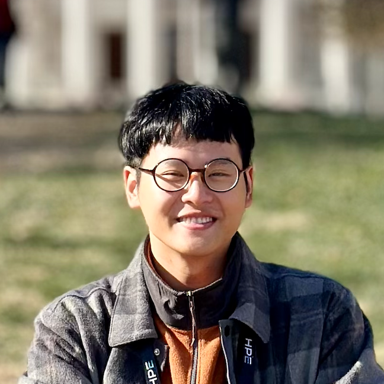
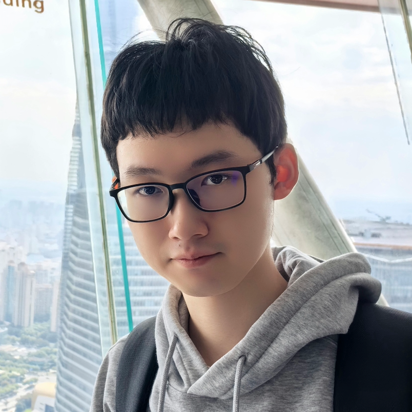

Home | Team | Grants | Projects | Publications | Teaching | Service | CV | We're Hiring! | 招生广告

Jieyang Chen
Assistant Professor
Department of Computer Science
University of Oregon
Eugene, OR 97403
Email: jieyang AT uoregon DOT edu
Current Students
-

Yanliang (Leon) Li is a 3rd year Ph.D. student in the Department of Computer Science at the University of Oregon. Before joining UO, he was a Ph.D. student at University of Alabama at Birmingham from 2023-2024. Yanliang earned his bachelor's degree in Computer Science from Chongqing University of Posts and Telecommunications (CQUPT) in 2023. His research interests include lossy compression, scientific visualization, GPU computing, and high performance computing. [learn more]
-

Yuhang Liang is a 3rd year Ph.D. student in the Department of Computer Science at the University of Oregon. Before joining UO, he was a Ph.D. student at University of Alabama at Birmingham from 2023-2024. Yuhang earned his Master degree in Computer Science from the University of Auckland in 2023. Prior to that, He earned his bachelor's degree in Computer Science from Southwest University in 2021. His research interests include high performance computing, fault tolerance, GPU computing, and machine learning. [learn more]